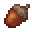
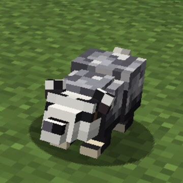
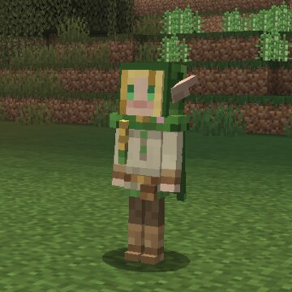

Woodland folkWoodland folk
Go quietly in the woods and you'll meet porcupines, badgers by night, and chipmunks everywhere. Reindeer roam the snowy plains; and in the old woods, the elves.



Creep (sneak) and most will let you near.
Reindeer
Herds of the snowy plains, and the deer's cousins: the same genes, bred the same way, tamed with a heartberry cake.


Reindeer ways
In snow they paw a crater for the lichen beneath. Lichen and moss bring them to you. As they walk, their knees click.
Cows carry antlers too, smaller ones, and keep them through the winter; bulls cast theirs as winter begins and grow them again in spring.
Reindeer coats
Five shades from cream to dark, paler and shaggier in winter. Calves are a soft red-brown.
Rare reindeer
Hidden in the herd as with deer: dark, piebald, and the pure white reindeer every herder hopes for.
The harness
A tame reindeer takes its own harness: blanket, saddle, and a collar of brass bells. Then ride.
Reindeer hide also tans to leather.
Porcupine
Slow, round and peaceable, until bothered. Stride up and the quills go up: it turns its back and pricks whatever touches it. Creep, and it won't mind.
Quills
Porcupines shed a quill now and then, and leave a few in anything that bothers them. A quill fletches arrows as well as a feather. They gnaw bark off logs, and love an apple.
Badger
Asleep by day, curled nose to tail; abroad at night, snuffling and digging for worms.
Badger ways
Crowd one and it bristles and grumbles: stay, and it bites. Leave it be.
Its digging turns up worms, and now and then a root or a bone. Earthworms are what it loves: two well fed make cubs.
Chipmunk
Always busy: it gathers seeds, nuts and berries until its cheeks bulge, then buries the lot.
Acorns
Offer a chipmunk acorns: in time it trusts you, and brings you what it gathers. And a forgotten acorn comes up an oak.
Acorns fall from oak leaves now and then; plant one yourself.
Forest elves
Shy folk of the old woods, in small bands, each with its glade. At dusk they dance there in a ring, and one plays the pipe.

Meeting elves
Run at them and they're gone. Creep near and they'll bow. You cannot hurt an elf.
They love sweet things: honey, flowers, berries, cake.
Gifts
Give an elf a gift and it gives you its leaf-wrapped honey bread; one gift a day each. After that the band knows you.
Now and then, to a friend, an elf gives its own pipe: play it, and the beasts come to listen.
Where to look
Reindeer: the snowy plains, and nowhere else.
Porcupines: woods and taiga. Badgers: woods, meadows and plains, at night. Chipmunks: woods and taiga, by day.
Elves: flower woods, birch woods and dark woods. Look at dusk, and listen for the pipe.